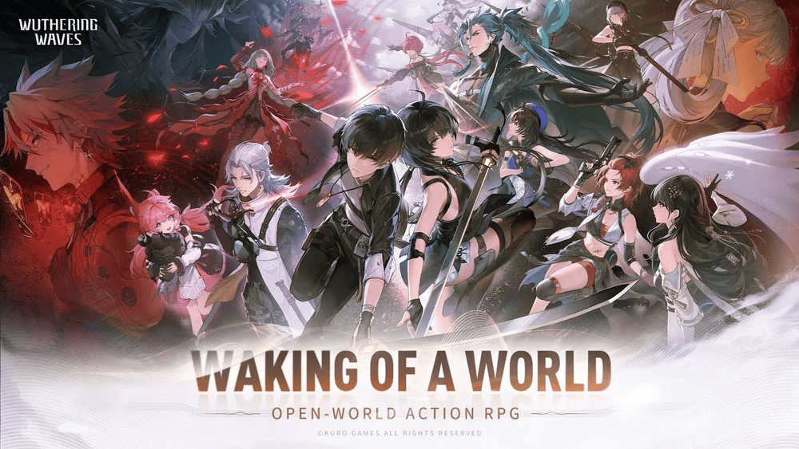
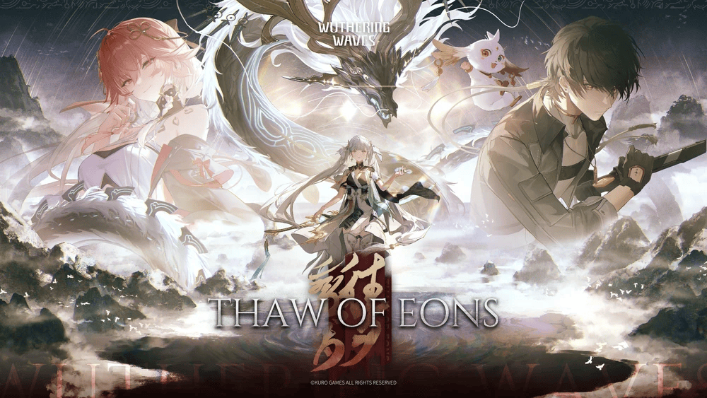
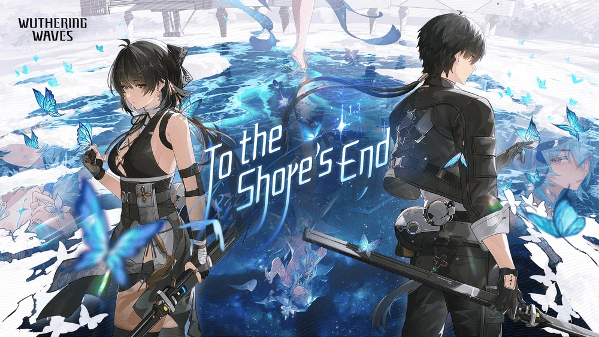
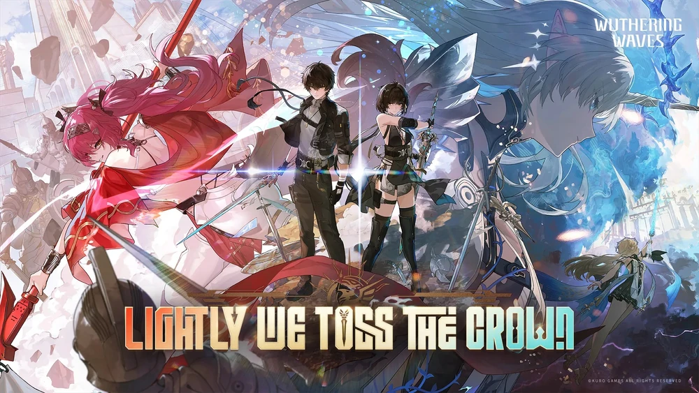
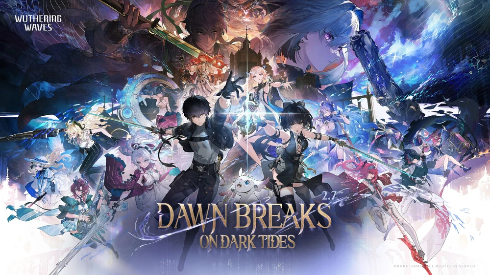
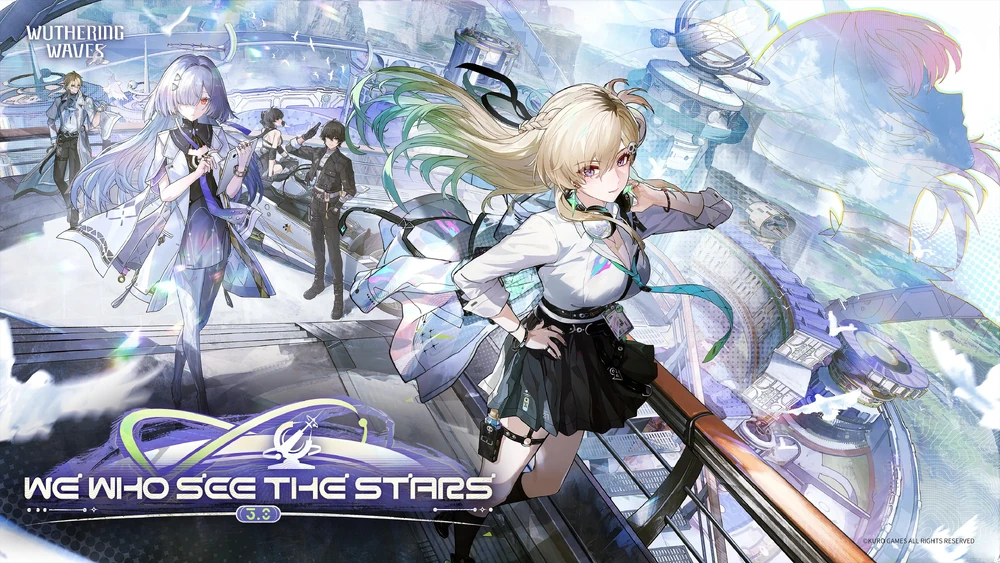

Story of Wuthering Waves

Huanglong Story
In the story of Huanglong in Wuthering Waves, the protagonist Rover awakens with no memories after a catastrophic event called the Lament and is discovered by Resonators like Yangyang and Chixia, who bring them to the city of Jinzhou in the nation of Huanglong. As Rover helps investigate dangerous monsters known as Tacet Discords and unusual disturbances, they meet key figures such as Jiyan and the magistrate Jinhsi, while uncovering the involvement of a mysterious group called Fractsidus led by Scar. Throughout the journey, hints reveal that Rover has a deeper connection to the world’s past and the disaster that created the Tacet Discords. The arc ends with Rover helping defend Huanglong from major threats while many mysteries about their identity, the Lament, and the true plans of Fractsidus remain unresolved.
Thaw of Eons

Mount Fermament
In the story of Huanglong in Wuthering Waves, the protagonist Rover awakens with no memories after a catastrophic event called the Lament and is discovered by Resonators like Yangyang and Chixia, who bring them to the city of Jinzhou in the nation of Huanglong. As Rover helps investigate dangerous monsters known as Tacet Discords and unusual disturbances, they meet key figures such as Jiyan and the magistrate Jinhsi, while uncovering the involvement of a mysterious group called Fractsidus led by Scar. Throughout the journey, hints reveal that Rover has a deeper connection to the world’s past and the disaster that created the Tacet Discords. The arc ends with Rover helping defend Huanglong from major threats while many mysteries about their identity, the Lament, and the true plans of Fractsidus remain unresolved.
To The Shore's End

Black Shores
In To the Shore’s End in Wuthering Waves, Rover continues their journey beyond Huanglong and reaches the coastal region of Rinascita, where strange resonance phenomena and Tacet Discord activity threaten the stability of the area. During this arc, Rover meets new allies, including Shorekeeper, who protects the shoreline and monitors the balance between the sea and the world’s resonance. As they investigate the disturbances, Rover uncovers deeper truths about the nature of the Lament and the fragile systems that keep the world from collapsing. Together they confront the growing threat and prevent a disaster along the coast, while the story further hints that Rover’s lost past and unusual resonance powers are closely tied to the world’s fate and the secrets behind the Lament.
Rinacita
.png)
All silent calls sing
The story shifts to the nation of Rinascita, where Rover investigates strange resonance disturbances affecting the coastal regions and ancient systems protecting the world. In the “To the Shore’s End” arc, Rover meets the guardian Shorekeeper, who watches over the boundary between the sea and the world’s resonance network. As the story progresses, Rover uncovers secrets about ancient mechanisms designed to stabilize the planet after the Lament, while new enemies and Tacet Discord threats attempt to disrupt them. With the help of new allies from Rinascita, Rover prevents a large-scale collapse of the coastal resonance systems. By the end of the 2.3 story, more hints appear about Rover’s forgotten past and their deep connection to the world’s creation and the forces that control resonance, setting up future conflicts and expanding the mystery behind the Lament and the true structure of the world.
Septimont

Lightly We Toss the Crown
The story continues in Rinascita as Rover investigates deeper resonance disturbances that threaten the balance of the coastal nation. Working alongside allies such as Shorekeeper, Rover uncovers more about the ancient systems that regulate the world after the Lament and the fragile mechanisms protecting humanity from large-scale Tacet Discord outbreaks. The conflict reveals that powerful forces are attempting to interfere with these systems, risking another catastrophic collapse. Through battles and investigation, Rover helps stabilize the situation while uncovering more clues about their mysterious past and their connection to the world’s resonance network, setting up even larger revelations for future chapters.
Final Battle of Rinacita

Dawn Breaks on Dark Tides
The story continues to expand the mysteries surrounding Rover and the global resonance systems created after the Lament. In the nation of Rinascita, Rover works with allies such as Shorekeeper and other Resonators to investigate increasingly unstable resonance structures and ancient mechanisms that maintain balance in the world. As Tacet Discord activity intensifies and hidden factions begin interfering with these systems, Rover uncovers deeper clues about the original design of the world’s defense network and their own mysterious connection to it. By the end of Version 2.7, the crises in Rinascita are temporarily stabilized, but the story reveals that much larger forces are manipulating events behind the scenes, setting up a future arc where Rover may finally confront the truth about the Lament and their role in the world’s past.
Lahai-Roi

We Who See the Stars
the story expands from Huanglong and Rinascita into new regions and deeper mysteries. In 2.8, Rover explores the Chronorift Metropolis, a city trapped in time loops, and meets new characters like Chisa, who uses spatial powers to protect a safe zone, and Buling, an Electro healer aiding the investigation. The quests reveal that the world’s resonance systems are more complex and fragile than previously thought. In 3.0, the story moves to Lahai‑Roi and the Startorch Academy, introducing Lynae and Mornye, whose knowledge of advanced technology and human augmentation ties directly to Rover’s mysterious past. Across both patches, Rover uncovers threats from unstable resonance, time anomalies, and hidden factions while helping allies stabilize critical systems, all while deepening the overarching mystery of the Lament, the world’s ancient mechanisms, and Rover’s true identity.